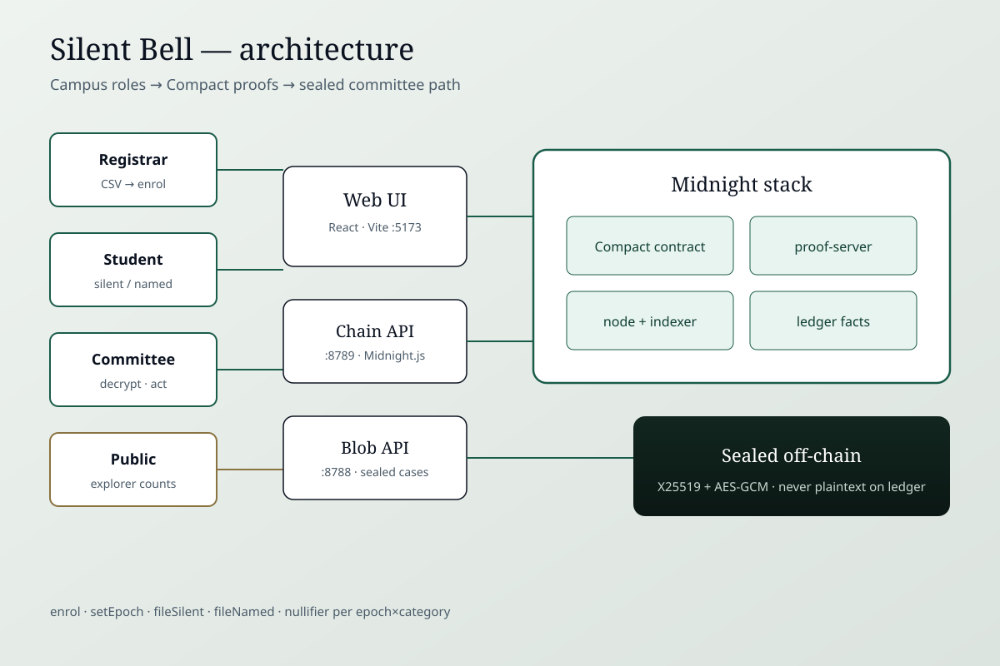
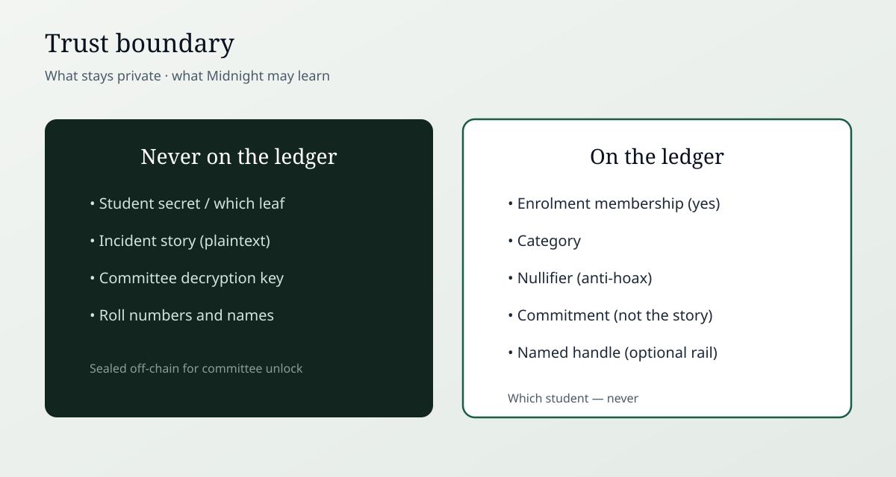

Brainwave 2026 · Midnight Track · Judge brief
The report that cannot be traced. The student who cannot be faked.
Silent Bell is a campus incident-intake product on Midnight. A student can prove they are on this semester’s roll, file a grievance, and keep their identity off the ledger. Outsiders cannot file. Duplicates cannot flood a category. The committee reads the case — not the silent name.
Campuses need reports of ragging, harassment, and hostel abuse. Students are offered two doors. Both fail.
Identity is attached. Retaliation is the rational fear: seniors who know, a warden who “handles it quietly,” three years of being left out. Juniors stay silent.
Anyone can submit. Outsiders, rivalries, hoaxes. The committee receives noise and learns to trust nothing. Real harm disappears into the pile.
The actual question: How do you prove a reporter is enrolled this semester — without revealing which student — and without letting fakes own the microphone?
The product narrative uses a synthetic composite (hostel lights / “intro”). Real harm is not submitted as content. The feeling is the requirement.
Silent Bell is a full-stack campus pilot: registrar, student, outsider fail, duplicate fail, named emergency, committee inbox, public explorer. Not a circuit toy.

| Role | What they do | What Midnight learns |
|---|---|---|
| Registrar | Publishes the semester roster as hashed Merkle leaves. Names stay in the CSV. | Roster root / membership set — not names |
| Student (silent) | Proves enrolment and files. Story is sealed to the committee key, stored off-chain. | Someone enrolled filed; category; nullifier; commitment. Never which leaf. |
| Student (named) | Same proof, plus a handle they choose to disclose — only when silence itself is unsafe. | Membership + the handle they published on purpose |
| Outsider | Tries to file. Circuit rejects. Product working. | No valid membership path |
| Committee | Unlocks the key on-device, decrypts, acknowledges, escalates, closes, or exports. | On the silent rail: still not which student |
| Public explorer | Sees epoch and counts. | Accountability without voyeurism |
| Layer | What |
|---|---|
| Compact | enrol, setEpoch, fileSilent, fileNamed — depth-4 HistoricMerkleTree (16 leaves), epoch × category nullifiers |
| Midnight.js 4.1.1 | Deploy and callTx against local Docker or public Preview |
| Proof server 8.1.0 | Real ZK proofs — not mocked |
| Chain API | Enrol / file / epoch / ledger reads |
| Blob API | Sealed capsules (X25519 + AES-GCM). Incident plaintext is never a ledger field. |
| Web | React / Vite product UI with FailWell states and a one-click Live cast |
This is the load-bearing claim. If the same product worked as a Google Form or a public Ethereum dApp, Midnight would be a sticker. It is not.
| Enrolment proven? | Identity protected? | Anti-hoax? | |
|---|---|---|---|
| Web2 form | No | Semi (IP, metadata) | Flooded with noise |
| Public blockchain | Via wallet / KYC | No — address is on the explorer | Gas + spam still possible |
| Silent Bell (Midnight Compact) | Yes — Merkle membership proof | Yes — witness never published | Yes — epoch × category nullifiers |
Midnight is built for selective disclosure: prove a fact without publishing the private data behind it. Compact is the language of those rules.

Student secret and Merkle path. Incident plaintext. Committee decryption key.
Membership check. Category. Nullifier. Commitment. Named handle only on the named rail.
Analogy: a sealed wristband that only enrolled students can produce. The club learns “this person is allowed in.” It does not learn the name from the wristband.
Compact is deployed on Midnight Preview (public test network accepted by the track). Judges can look up the address on the Preview explorer.
Deployer
mn_addr_preview1guclk6ltr8prs87mu7um563r46fzdtvnazg0vzc8xame8qqhe93s7v7dx6
Explorer
explorer.preview.midnight.network
· Verified via Preview indexer contractAction → ContractDeploy
The demo video runs the same circuits against a local Midnight stack (proof-server, node, indexer) so judges see real proofs without Preview wallet-sync latency. The Preview address is the public eligibility deployment.
Watch: https://youtu.be/KOa5WjgBbwM
The video shows the live product:
To reproduce locally: clone
the repo,
follow README.md
(docker compose up, blob, chain, web). Demo accounts and
committee passphrase are in
COMPAT.md.
This is a hackathon campus pilot, not a UGC-certified production system. Roster size is bounded (16 leaves in the depth-4 tree). Pilot passwords would be replaced by campus SSO. Committee keys would be held in a real ceremony. Incident stories in the demo are synthetic.
What is real: Compact circuits, Midnight.js transactions, proof-server proofs, Preview deployment, and the product rule — prove enrolment, never force the name, never let fakes own the microphone.